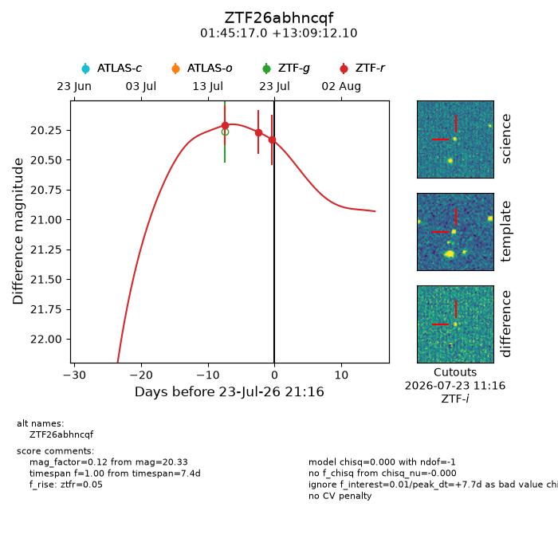
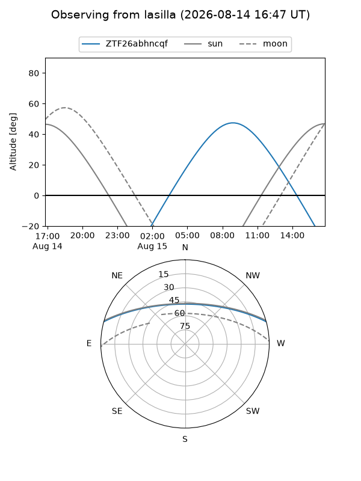
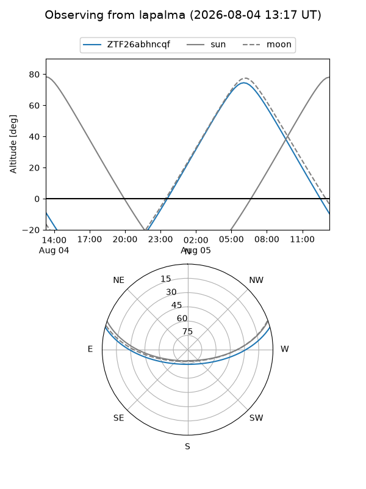
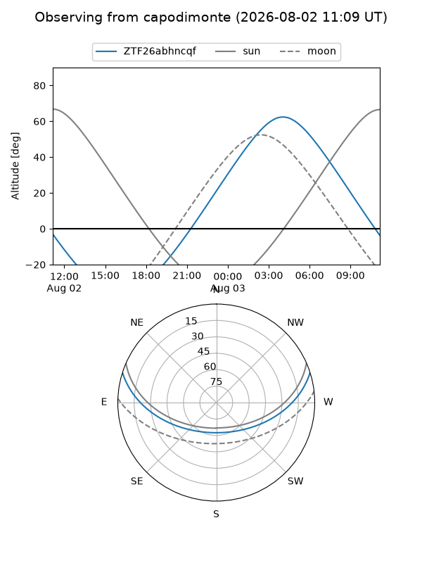
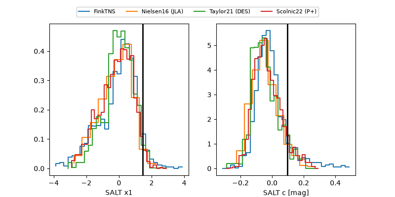

ZTF26abhncqf
Target ZTF26abhncqf at 2026-07-23 21:19
Aliases and brokers:
FINK-ZTF: ztf.fink-portal.org/ZTF26abhncqf
Lasair-ZTF: lasair-ztf.lsst.ac.uk/objects/ZTF26abhncqf
ALeRCE-ZTF: alerce.online/object/ZTF26abhncqf
Direct TNS query: direct search
alt names
ZTF26abhncqf (ztf,fink_ztf)
Coordinates:
equatorial (ra, dec) = 26.3208,+13.15336
equatorial (HMS+DMS) = 01:45:16.99,+13:09:12.10
galactic (l, b) = (142.5961,-47.65199)
Flags:
peak dt: +7.7
Photometry:
last ztfr=20.33
3 ztfr detections
Lightcurve

Visibility



Additional plots
